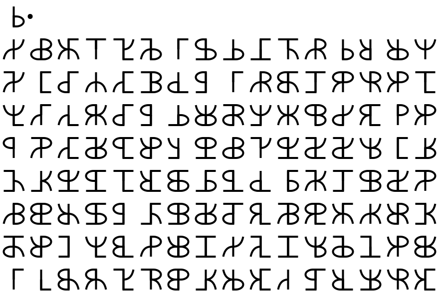

<html></html>
<head>
    <title>Hex runes</title>
    <link rel="stylesheet" href="../../style.css">
    <meta name="viewport" content="width=device-width, initial-scale=1">
    <script type="text/javascript" src="https://cdn.jsdelivr.net/npm/mathjax@2/MathJax.js?config=TeX-AMS-MML_HTMLorMML">
    </script>
</head>
<body>
    <h2><a href="/">Adam Scherlis</a></h2>
    <h1>Hex runes</h1>
    <em>2025-01-07</em>
<p>I blogged about these <a href="https://adam.scherlis.com/2022/10/28/cryptic-symbols/">in 2022</a> and promised an explanation "soon". Here it is!</p>
<p>A fun notation for byte values:</p>
<p></p>
<p>But it looks a little nicer if you round things off:</p>
<p></p>
<p>In the usual notation, that's <code>03 . 24 3F 6A 88 85 A3 08 D3</code> and so on.</p>
<p>The angular form is somewhat inspired by Norse runes, especially <a href="https://en.wikipedia.org/wiki/Bind_rune">bind runes</a>. The round form is intended to be mistakable for as many Latin, Greek, and Cyrillic letters as possible.</p>
<p>I have since learned about <a href="https://en.wikipedia.org/wiki/Cistercian_numerals">Cistercian numerals</a>, which are a fun medieval take on the same concept.</p>
<h2>Code</h2>
<p>As usual, there's a <a href="https://github.com/AdamScherlis/notebooks-python/blob/main/codes/hexrunes.ipynb">messy notebook</a>.</p>

</body>
</html>